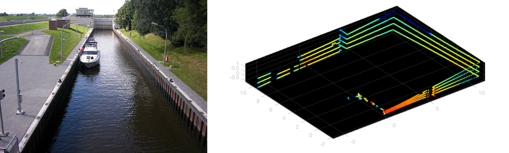
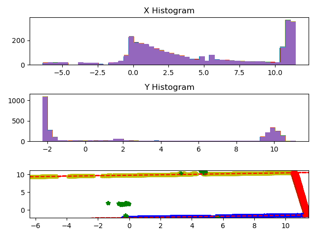
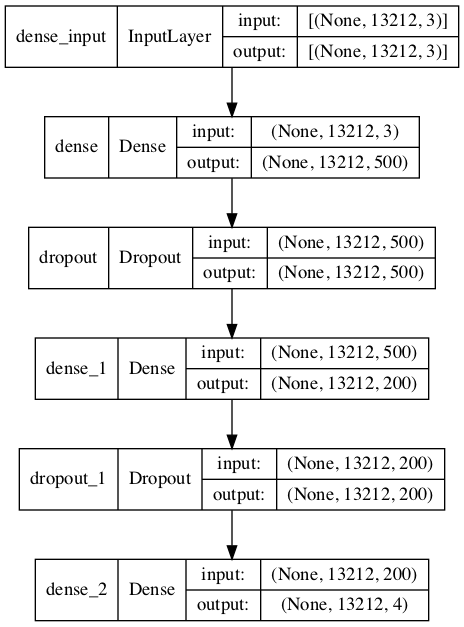

プロジェクトの目標
班員がインターンシップをしている会社では閘門(水門)内での船の正確位置の把握が課題であった。その会社では船上に搭載されたLiDARでレーザー計測を行い、そこから得られたデータにRANSAC(Random sample consensus)を適用し辺を認識することで水門を特定しようとしていた。しかしながらRANSACでの水門認識はラグが発生することから新たな手法の開発が求められていた。
そこで私たちはこの水門の検出に機械学習を使用し、可能な限りリアルタイムでの水門検出を実現しようとした。具体的なプロジェクトの要点は以下の通りである。
- LiDARのデータは2.5秒間、毎秒10フレームで計測され、1フレーム13212点もの計測点(x,y,zの座標)を有している。
- 座標のみを示すデータからそれぞれの水門と壁、そして船自身やそれ以外の部分の計測点をラベリングし、教師データを作成する。
- 教師データに回転とノイズを加え、学習にロバスト性を持たせる。
- 畳み込み型ニューラルネットワークを用いて学習する。またリアルタイム性を高めるため、可能であればより少ないデータ点で予測が可能なモデルを開発する。
成果
データのラベリングにはLMS法(Least Median Squares method)を用いた。
\begin{equation} \min_{\hat{\theta}} \mathrm{med}_{i} r_i^2 \end{equation}ここで\(\hat{\theta}\)はparameter vectorであり、\(r_i^2=(y_i-\hat{y}_i)^2\)である。LMSはLSQ(Least squares method)より外れ値に対してよりロバストである。 下図のようにxとyの座標ごとのデータの分布を確認し、そこから左右の壁(下図黄色と青線)を特定し、残りの点から赤線で示された水門を検出しラベリングした。
ラベリングには以下のラベル用いた。
- 0 ; 壁にも水門にも所属しない点
- 1 ; 左の壁
- 2 ; 右の壁
- 3 ; 水門(可動部)
これらラベルが振られた全25フレームに対し、x,y,z軸それぞれに対して10,10,20の回転のパターンを適用し、1000フレームまで教師データを増やした後、ガウスノイズをランダムに適用し、レーザー測定のノイズを人工的に再現した。
学習には以下に示す畳み込み型ニューラルネットワークを用いた。インプットデータのラベルはone-hot型とし、アウトプット層にはSoft max関数を用いることで典型的なclassification問題として解決を図った。
学習は300エポック弱で終了し、最終的な精度は99.36%となった。
左の図の青の線は正解のラベルを表している。one-hot関数を用いたため、青の線のとりうる値は0または1である。その上に重なっているオレンジの線が機械学習による予測である。それぞれのラベルに該当する可能性を0~1の値でそれぞれ示している。特定の点に対する予測の合計は1である。 右の図は予測をプロットしたものである。赤い点は予測が間違っていた点であり、ここから壁の角や壁にある通路などでは予測が間違っていることがわかる。しかし全体的には非常に正しい予測をしており、実用に耐えうることがわかる。プロットの傾きと点が不規則に並んでいるのは回転とノイズによるものである。
上記モデルでは予測に1フレームの全ての点を用いるため、最大でも0.1秒ごとにしか予測することができない。よりリアルタイムでの予測を行うため、近傍の何点かのみの情報で予測をするモデルも開発した。